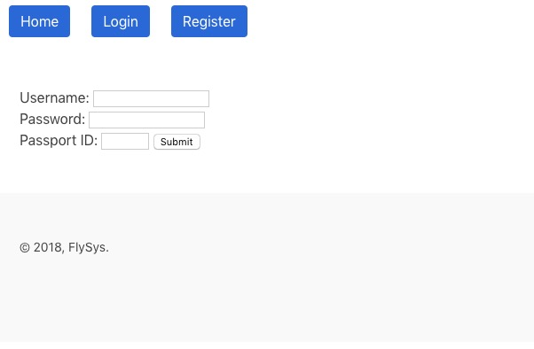
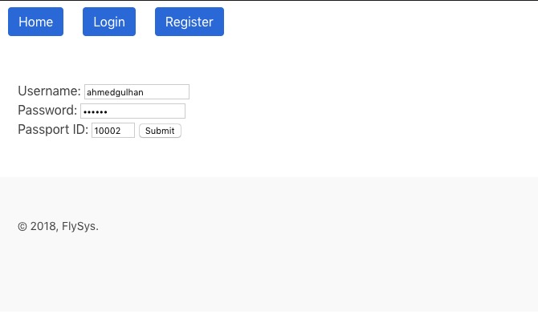
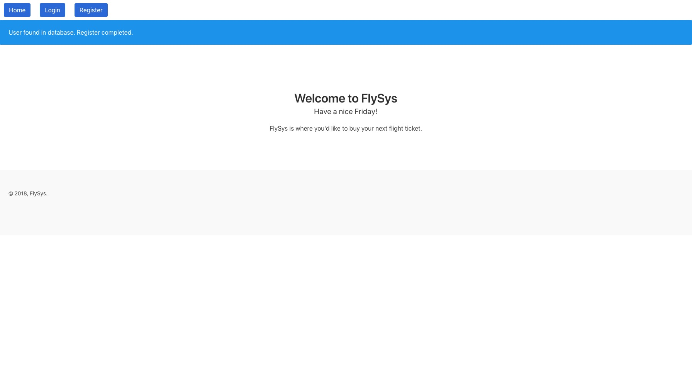
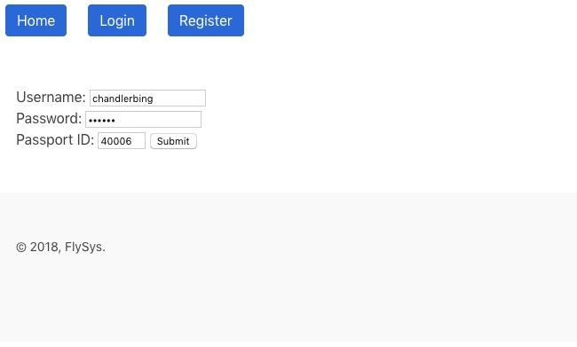
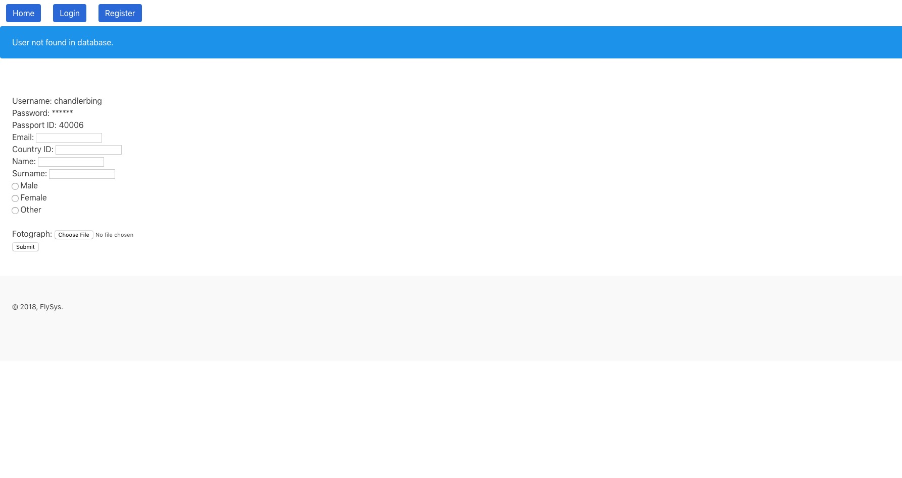

Basics¶
Register Page¶

This is how you register as a new user of the website.

Member 1 Ahmed Gulhan as a new user. He is in the Passengers table of the database.

Since he is already in the Passengers table, all the necessary information to register is in the database. Therefore he does not need to fill any extra information to be a user.

Let’s try to register as a person who is not in the Passengers table of the database.

Since he is not in the database, website asks him to fill out some information as you see above.